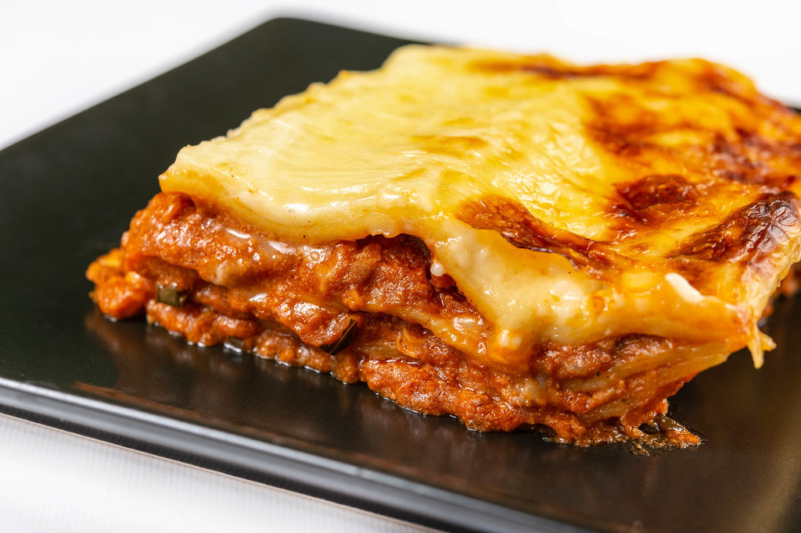

Home
Lasagna Recipe

Description
Lasagna is a traditional Italian dish made with layers of pasta, rich meat sauce, creamy béchamel, and melted cheese. The pasta sheets are alternated with a savory filling made from ground beef, tomato sauce, onions, and herbs. Between each layer, béchamel sauce adds a smooth texture, and mozzarella or Parmesan cheese gives it a deliciously golden top when baked. It's a comforting and hearty meal, perfect for sharing with family or friends.
Ingredients
- 9 lasagna noodle
- 500g (1 lb) ground beef
- 1 onion, chopped
- 2 cloves garlic, minced
- 400g (14 oz) tomato sauce
- 2 tablespoons tomato paste
- 1 teaspoon dried oregano
- 1 teaspoon dried basil
- Salt and pepper to taste
- 2 tablespoons olive oil
- 500ml (2 cups) béchamel sauce
- 200g (2 cups) shredded mozzarella cheese
- 50g (1/2 cup) grated Parmesan cheese
Steps
- Preheat the oven to 180ºC (350ºF)
- Cook the lasagna noodles in boiling salted water until al dente. Drain and set aside.
- Heat olive oil in a pan over medium heat. Add chopped onion and garlic, and sauté until soft.
- Add the ground beef and cook until browned.
- Stir in the tomato sauce, tomato paste, oregano, basil, salt, and pepper. Let it simmer for 15-20 minutes.
- Spread a thin layer of meat sauce on the bottom of a baking dish.
- Place a layer of noodles over the sauce.
- Add a layer of meat sauce, then a layer of béchamel sauce, and sprinkle with mozzarella.
- Repeat the layers (noodles, meat sauce, béchamel, cheese) until all ingredients are used, finishing with béchamel and a generous sprinkle of Parmesan on top.
- Bake in the oven for 30-40 minutes or until the top is golden and bubbly.
- Let it rest for 10 minutes before serving.